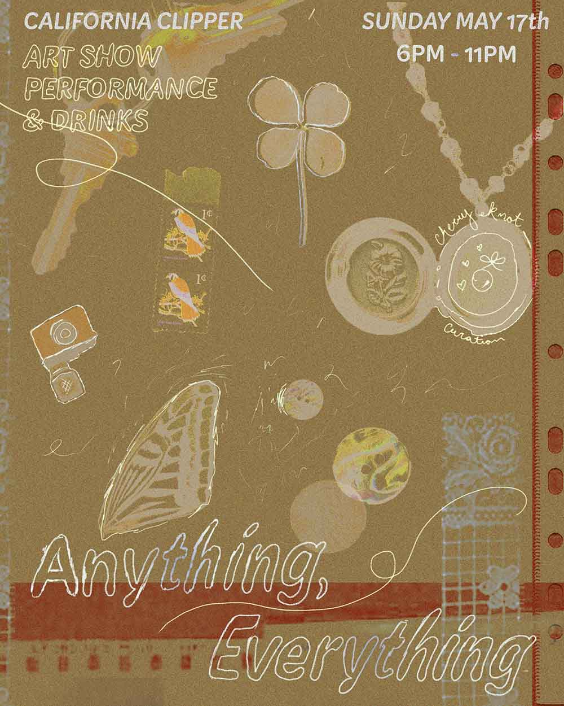

Anything, Everything
Cherry Knot is a Chicago based artist-run curation group, consisting of full time artist-laborers Rain Shanks, Peach, and Amanda Thomas. Cherry Knot is committed to dismantling the notions of the white walled gallery-artist hierarchy by fostering art accessibility through community building and the creation of queer and trans-centric spaces.
This one night pop-up art exhibition by Cherry Knot will host over 20 artists and one performance. Featuring work related to the theme of “objects”. The work revolves around the domestic, the mundane, objects for political change/ activism, still lives, altered objects, and of course the ready made. Join us for a night of finding meaning in and relating to any”thing”, every”thing” around us~
Artists:
Charlie Arsenault, Amador Antonio, Eli James Clayton, Ess, Alexis Estrada, Abby Franke, Zoe Gunter, Thalya Annick Jouin, Astrid Karron, Nico Kazlauskas, Amy Konaszewski, Leah Lara, Nani Lee, Sophie Lopez, Gnat Rosa Madrid, Abby Linatoc Mendoza, Sal Moreno, alexandra ok, Alex O’Neill, Sahori Ortega, Helena Starzec, Casey VanderStel, Zhizi Wu